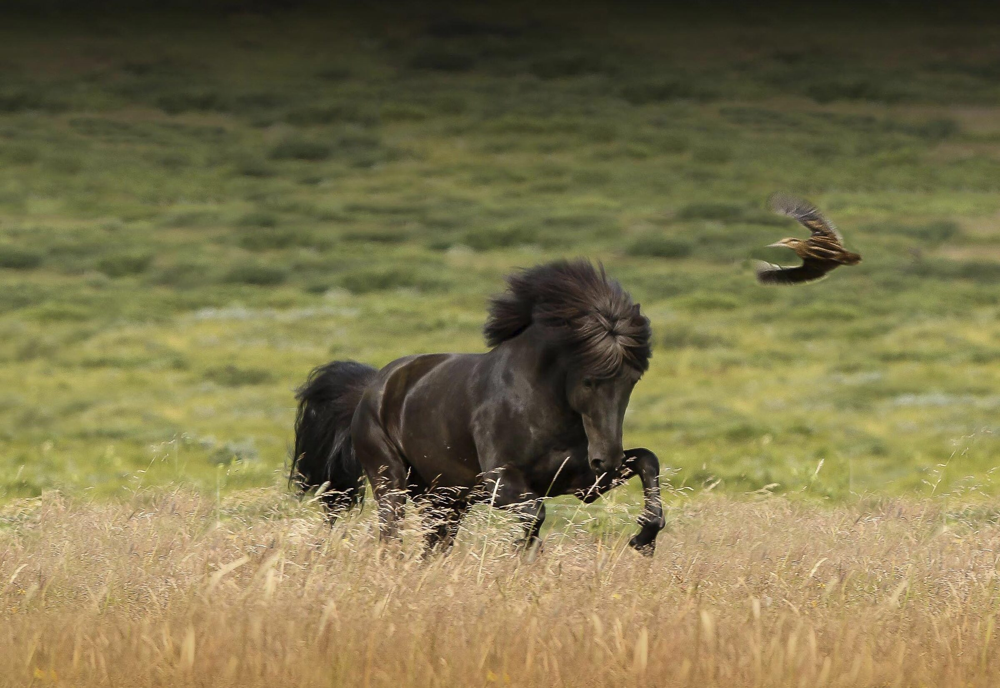
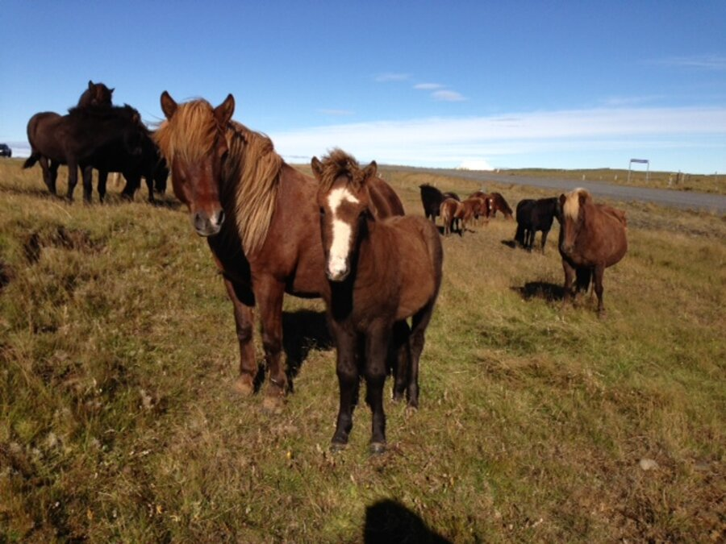
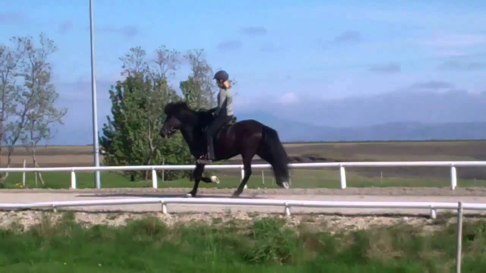
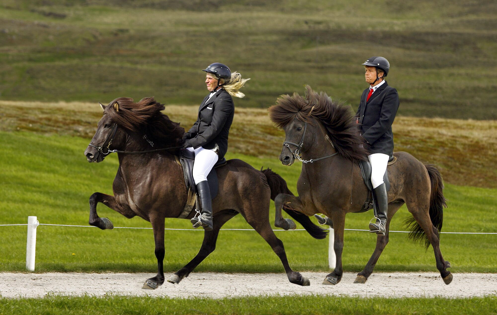
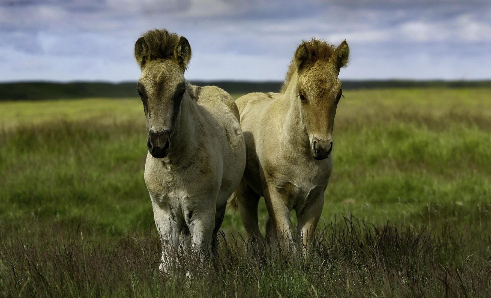
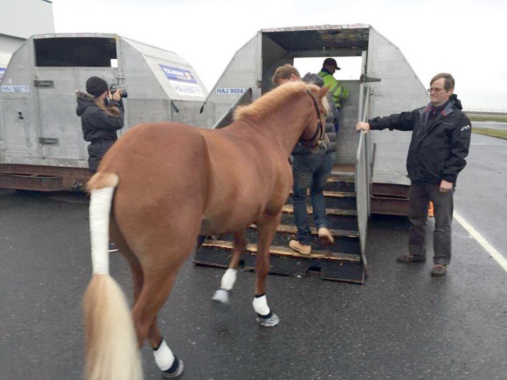
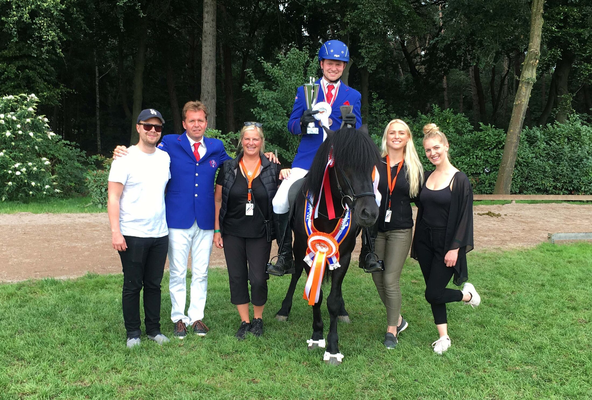
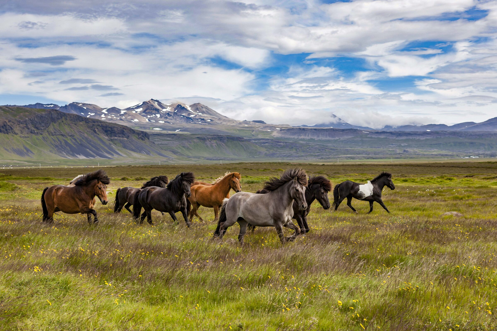
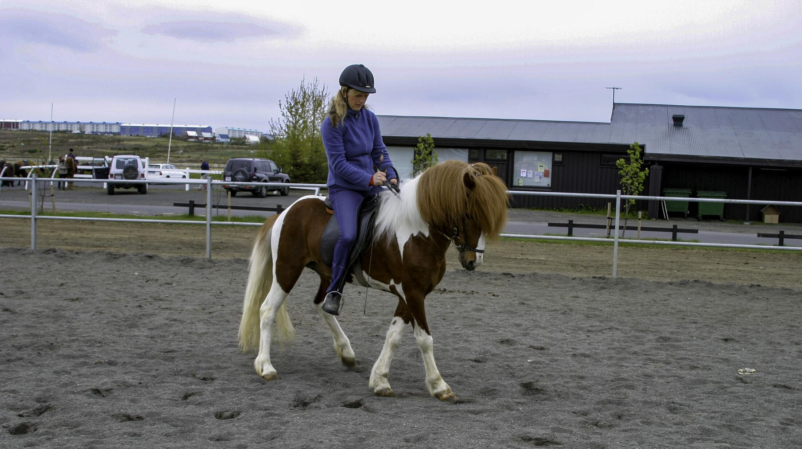

Árbakki, Hella
Hestvit
The gaits are the whole reason a horse from here is worth flying home
See the current stable
Horses for sale
The current stable
Not every horse we can sell is listed here. Write and ask for the current stable, some of what we sell has already left for a new rider.

Spurning frá Árbakka
For sale · real photoNamed for the question-mark marking on her face, a beautiful, distinctive mare foal.
Ask about SpurningGordon frá Árbakka
For sale · photo pendingBig, close to 1.45m and still handsome, with a mane to match.
Ask about GordonSkandall frá Sælukoti
For sale · photo pendingHandsome, a little over medium size, and a straightforward riding and competition horse.
Ask about Skandall
Gneisti frá Árbakka
Sold · real footageA tiny star, an even four gaits, ready for the ring. Sold, with footage from Hestvit's own channel — plays automatically as you reach him, a look at what leaves this stable.
Real horses only, no generated imagery. Horses without a confirmed photograph of that individual are marked and wait on footage from Hestvit.
Gangtegundir
The five gaits
The Icelandic horse is one of very few breeds that carries all five natural gaits. A buyer in Munich or Malmö cannot ride the horse before it lands. This is the rhythm they are actually buying.

Four even beats, always at least two feet down. Unhurried, the gait of a horse being led.
Four even beats at speed, with no suspension phase, so the rider's back stays level. This is what an Icelandic horse is bought for.
Two-beat, diagonal pairs landing together, with a moment of suspension between strides.
Three beats and a clear suspension phase. The collected gait, used in breeding evaluations.
Two beats, lateral pairs, ridden flat out over a short straight. The race gait, and not every horse carries it.
Hestvit has been the biggest exporting company for several years, exporting around 600 horses to all over the world every year.
We handle the whole journey

Pickup
Árbakki
We collect horses from sellers across Iceland, east, north, west and south, and bring them home to Árbakki to prepare.
[ N63 50.6, W20 24.1 · Hella ]
Papers
Vet & export papers
FEIF passport, health certificate and export permit, arranged by us before the flight is booked.
- Health check
- Licensed vet, pre-export
- Passport
- FEIF-registered
- Handled by
- Hestvit, start to finish

Freight
Keflavík
Loaded into an air-freight crate and flown out on a chartered cargo flight, batched with other horses on the same route.
[ Cargo charter · Keflavík Airport ]

Delivered. Most horses go on to Europe, and some come back to a podium a few seasons later, ridden by the people who bought them.
A family farm below Hekla
Hinrik Bragason and Hulda Gústafsdóttir have worked Icelandic horses together since 1987, on endless fields with Hekla on the horizon. Three generations now breed, train and export from the same yard at Árbakki.


Clinics & training
Hinni and Hulda teach on Icelandic horse farms across Europe, from first lesson to World Championship preparation, in German, English and Icelandic.
- 30+ yearsTeaching riders at every level
- DE · EN · ISTaught fluently, on request
- On locationClinics at farms across Europe
63° 50' N 20° 24' W
Árbakki, Hella
Where the horses go
Most horses leave via Keflavík on a chartered cargo flight to a European hub, then travel on by truck to the buyer's country.
Source: FEIF, 2024 export figures
1,318 Icelandic horses were exported in total in 2024, to 19 countries (FEIF). These four took three quarters of that trade. Hestvit does not publish its own country breakdown.
- ~60horses per charter to Norrköping, Sweden, about 4 times a year
- Weeklyflights to Liège, Belgium, trucked on across Europe
- 10horses on the direct route from Belgium to Kolding, Denmark
- ~30horses per charter to the USA, 2-3 times a year